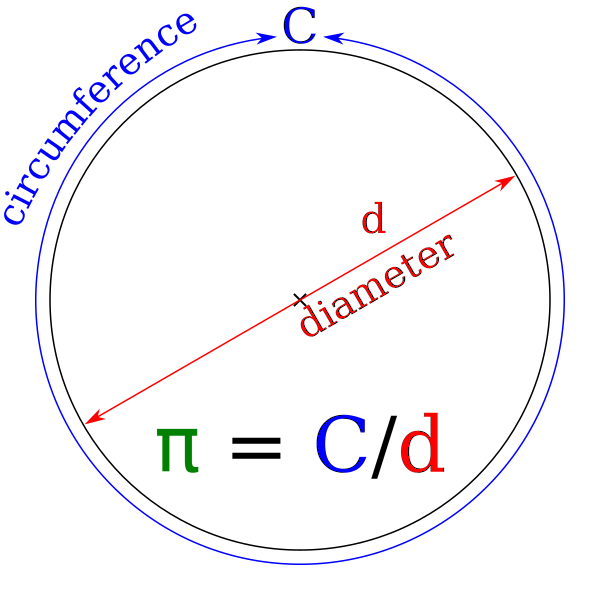

Home |
About Me |
Projects
Numerical Constant Digit Finder

Choose the mathematical constant you would like to see.
π (pi)
e (Euler's number)
φ (golden ratio)
I will output all digits of π within a range of your choosing.
to
Show me the digits!